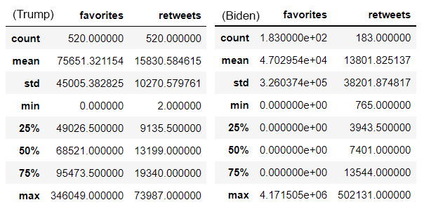
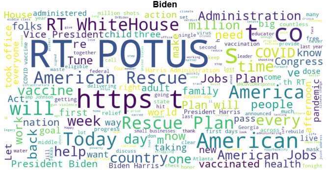
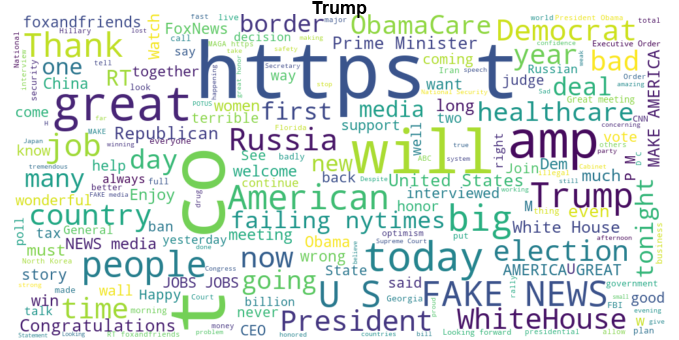

In the United States of America, the first 100 days of a presidential term has symbolic significance. This is when a president's specific priorities are defined and parlayed. It is also considered an early indicator to measure their success.
The term was originally coined in 1933 by Franklin Delano Roosevelt when he passed 76 laws during his first 100 days. While comparing their accomplishments during this time is beyond the scope of this article, we will consider the messaging of each politician. We want to explore the tone of each politician during this important period, also known as the "honeymoon" period of a presidency. To do this, we will take a look at the Tweets made during the first 100 days for each politician to see how objective and postive each president was and what messsages resonated with their followers.
With the help of Natural Language Processing (NLP) techniques, we will explore Twitter data using textual featurization, sentiment analysis and word cloud visualizations.
The following work employs data from Kaggle, as well as data collected from Twitter using Tweepy. Tweepy is a Python library that allows you to access the Twitter API with a Twitter Developer account and access credentials. The data for Donald Trump is a dataset shared on Kaggle and includes all of his Tweets prior to his account being frozen. The data for Joe Biden was accessed via the Twitter API. Data were cleaned and formatted for analysis using various Python libraries (detailed in Notebooks). Data and Jupyter Notebooks used for the analysis are accessible via the Github link at the bottom of this page.
Exploratory Data Analysis
The main purpose of exploratory data analysis is to better understand the data, look for any patterns, find interesting relationships among the different variables and brainstorm questions about it.
Data for each candidate was cleaned and analysed using Python and associated libraries in Jupyter notebooks. Tweets for the first 100 days were queried for each candidate. January 20-April 30, 2017 for Donald Trump and January 20-April 30, 2021, for Joe Biden.
As a first step, we look at some statistics of the tweets for each politician. The data below are snapshots of the results of the Pandas built-in function df.describe() for the numerical fields in the datasets.
I guess not so surprisingly, Donald Trump's number of tweets in the first 100 days (520) is significantly greater than that of Joe Biden (183).
When users retweet a tweet they amplify the message of it. It can also help develop the followers of the original tweeter. Let's review the top 10 most re-tweeted tweets for each.
(Hover over image to make larger)Most of Biden's top retweets are focused on getting started in office and the inauguration. They also address wearing masks and rejoining the Paris Climate agreement.
(Hover over image to make larger)Trump's most retweeted tweet was that peaceful protests are a hallmark of democracy. Interestingly, his second most retweeted tweet was about the Patriots' comeback win.
When users 'favorite' a tweet, they are showing appreciation for it. The more favorites a tweet has, the more we know it is adding value to social media content. Let's review the top 10 most favorited tweets for each.
(Hover over image to make larger)Biden's most retweeted tweet is also his most liked or favorited. His readers are most supportive of the tweet "It's a new day in America".
(Hover over image to make larger)Trump's followers also liked his statements related to inauguration and statements about the people gaining control again.
TextBlob Sentiment Analysis
Next, we processed the data further by utilizing TextBlob, a Python library that provides an API for many common natural language processing (NLP) tasks including sentiment analysis.
TextBlob’s sentiment analysis processing employs two key metrics: polarity and subjectivity. The polarity score is a float within the range [-1.0, 1.0], and it reflects the emotional charge of a statement or passage. Subjectivity is a float within the range [0.0, 1.0], where 0.0 is very objective and 1.0 is very subjective.
The following are the polarity scores for each president based on their respecive tweets.
(Hover over image to make larger)Looking at the polarity score, for the most part both candidates remained neutral on the majority of their tweets. Trump's range is greater as he tweeted significantly more than Biden and he has more in the negative direction beyond that of Biden but he also has some that are more positive.
Another way to classify text is to determine the objectivity or subjectivity of it. If text is objective, it is considered factual and not someone's personal opinion. Subjective sentences generally refer to personal opinion, emotion, or judgment.
The following are the subjectivity scores for each president based on their respecive tweets.
(Hover over image to make larger)As you can see in this histogram, Biden's tweets fall mostly below 0.6 and on the objective end of the spectrum. Trump, on the other hand is across the board with a large portion centered midway along the continuum of objectivity/subjectivity with many more tweets considered subjective rather than factual and objective.
Let's inspect tweets by looking at them sorted by positive polarity and showing the top 5 rows.
(Hover over image to make larger)Biden's tweets have well wishes to the public for two holidays and he shares the good news around vaccines. We see many positive words such as "wish", "health", "hope", "happiness" and "prosperity".
(Hover over image to make larger)Trump's most positive tweets include mentions of Justin Trudeau and a nod to the heroes of Medal of Honor Day. Trump uses positive words including "happy", "congratulations", "wonderful" and "welcome".
Let's take another look at them showing the top 5 most negatively charged tweets by politician.
(Hover over image to make larger)Biden's tweets reflect a tough time in America especially around race relations. His tweets comment on Daunte Wright and also the Derek Chauvin murder trial - the police officer found guilty of murdering George Floyd. While these messages are called out as negative, the sentiment is clearly positive from Joe Biden. Negative words include "pain", "anger", "trauma", "murdering" and "guilty".
(Hover over image to make larger)Trump is concerned with FBI leaks and accuses former President Obama of wire tapping and McCarthyism. He promotes fear-mongering by the statement "we must keep evil out of our country" and the idea that vicious prisoners have been released by the Obama administration.
Time Series Analysis
Next we look explore trends over time. Below are visualizations of the temporal distributions of each politician's tweets.
(Hover over image to make larger)Biden's Tweets over time were pretty consistent and averaged almost 2 tweets per day. The first and last days had significantly more tweets and this would make sense because it was inauguration day and the 100th day when he probably tweeted progress on his commitments for the first 100 days.
(Hover over image to make larger)Trumps tweets varied across the time period and he averaged over 5 tweets per day. Based on the frequency, polarity and subjectivity of his tweets, its possible he tweets in a less informative and in a less official capacity.
Time Series Sentiment Analysis
For the graphics below we categorized our polarity values into to sentiment classes (negative = -1 to -0.01, neutral = -0.01 to 0.01, and positive = 0.01 to 1).
(Hover over image to make larger)More than half of Biden's tweets were positive and less than 15% were negative. More than half of Trumps were also positive, but the remaining were pretty evenly split between negative (almost 24%) and neutral.
Plotly was used to create the graphs below. They show the average subjectivity and polarity scores for tweets aggregated by date for each president.
(Hover over images to make larger)I wouldn't say a trend exists necessarily over time for either president in polarity or subjectivity. However it is obvious that Biden appears more positive in his tweets overall when compared to Trump's and Trump has significantly more subjective tweets especially early in his 100 day period.
Word Cloud Visualizations
Lastly, we take a look at the frequency of words tweeted by generating word clouds using the Python library "Word Cloud".
The most frequently occuring words in Biden's tweets include "POTUS", "America(n)", "will", "rescue" and "WhiteHouse".
In Trump's cloud we see "great", "American", "will", "Fake news" and "Russia".
That concludes the exploration of tweet sentiments of each President's first 100 days. I won't comment on which I felt was more postitive and subjective - you can draw your own conclusions on the data provided.
Please feel free to check out the notebooks I created for the analyses by clicking on the Github icon below!
Header Image of candidates by Pennlive